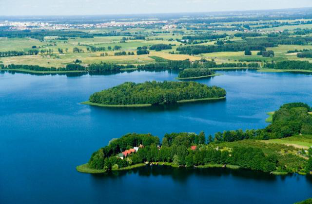
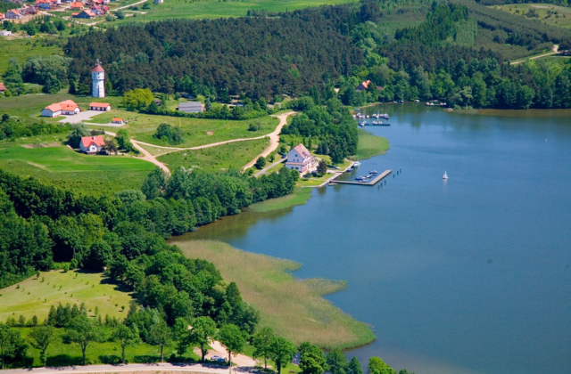
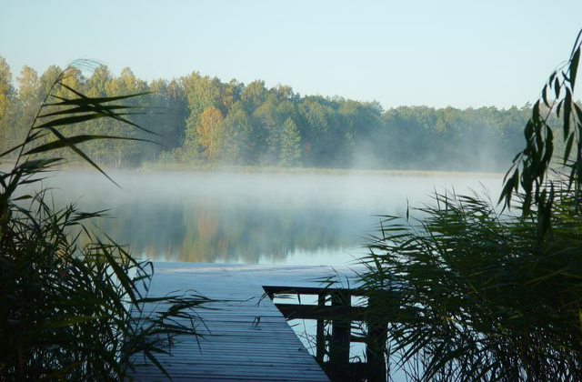
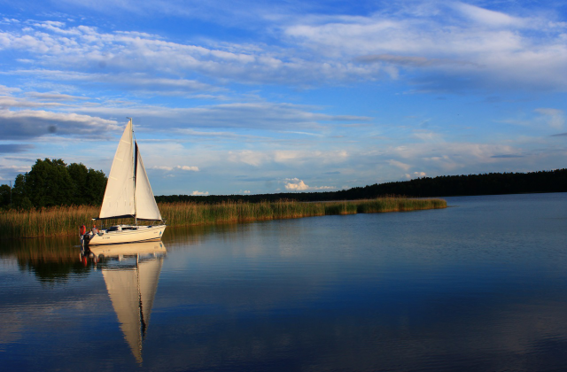
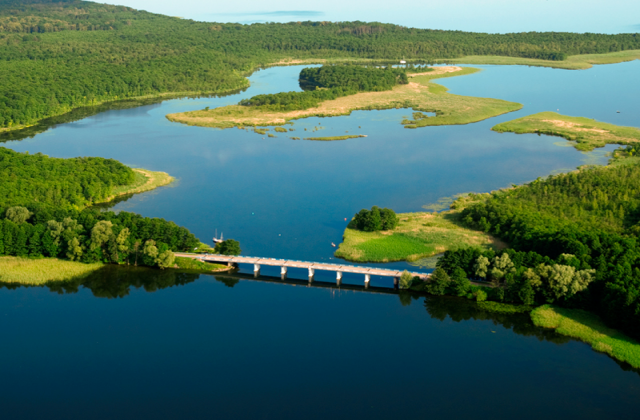
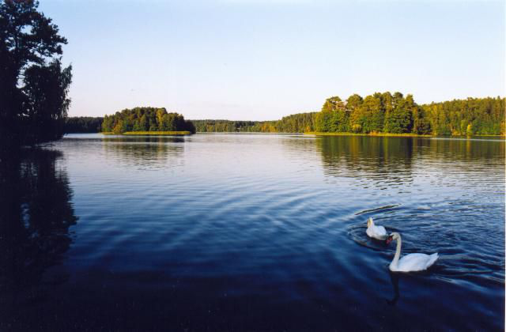

Mazury.info
Ogólne informacje
Szlaki wodne
Galeria
Noclegi
Galeria zdjęć

Gmina Stawiguda z lotu ptaka

Wokół Jeziora Mamry

Okolice Raciboru

Spływ jachtem

Mazury z lotu ptaka

Jezioro nidzkie